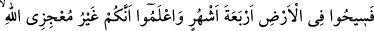
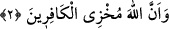

dinleyinceye kadar ona eman ver, sonra (müslüman olmazsa) onu güven içinde
bulunacağı yere ulaştır. İşte bu onların bilmeyen bir kavim olmaları sebebiyledir.
Ey müslümanlar, bunlar “Allah ve Rasûlü’nden” yani onlar tarafından yapılan
“kendileriyle andlaşma yapmış olduğunuz müşriklere” verilen “bir ihtardır!” Yani:
“Allah ve Rasûlü müşriklerle yaptığınız andlaşmadan uzaktır. Andlaşmaları kendilerine
atılmıştır.”
Allah’tan olan beraet, yâni ihtâr, korumanın sona ermesi, münâsebetin bitmesi ve
andlaşmanın bozulmasıdır.
“Allah müşriklerden berîdir.” (et-Tevbe, 9/6) âyetinde “berâet” kelimesinin
kendisine taalluk ettiği kelime (müşrikler) zikredildiği halde bu âyette cümlenin genel
akışından anlaşılacağı için ve bir de (min) harf-i cerrinin tekrarından kaçınıldığından
zikredilmemiştir.
Andlaşma vacib değil de izin verilmiş bir mübah olması ve müslümanların da
peygamberleriyle beraber böyle bir ahid yapmış olmaları sebebiyle ahid, müslümanlara
nisbet edilerek “andlaşma yapmış olduğunuz” buyurulmuştur. Çünkü Allah Teâlâ
tarafından izin verilmiş olsa da andlaşmayı doğrudan kendilerinin yapması bakımından
ilk olarak müslümanlar akla gelir. Beraet (ihtar verme) ise böyle değildir. Çünkü o
Allah Teâlâ tarafından vâcib kılınmış ve muhâtapların kendi görüşüne bırakılmayan
diğer emirler gibi Allah tarafından yapılması istenmiş bir emirdir.
Ahid, yeminle kuvvetlendirilmiş bir akittir. Müslümanlar Allah’ın izni ile Mekkeli
müşriklerle ve diğerleriyle andlaşma yapmışlardı. Rasûl-i Ekrem (s.a.)’in muvâfakatini
de almışlardı. Fakat Kinane ve Damreoğulları dışında tüm müşrikler ahidlerini
bozduklarından müslümanlara da yaptıkları ahdi bozmaları emrolundu. Bundan sonra
müşriklere dört ay mühlet tanındı.
2. (Ey müşrikler) Yeryüzünde dört ay daha dolaşın, iyi bilin ki siz Allah’ı âciz
bırakacak değilsiniz. Allah kâfirleri rezil rüsvây edecektir.
Onlara deyin ki: Ey müşrikler “Yeryüzünde dört ay daha” gelip giderek saldırı ve
savaştan emniyette olarak, yağma ve baskından korkmadan “dolaşın.”, seyahat edin,
gezip dolaşın.
“Seyh” ve “Siyahat”, suyun tabiatı üzere akması gibi yeryüzünde dilediği şekilde
kolayca gitmek ve seyretmektir. Bu kelimede, yine “gidiniz seyr u sefer ediniz”
anlamındaki “__WORD__” kelimesinde ve benzerlerinde bulunmayan bir rahatlatma ve